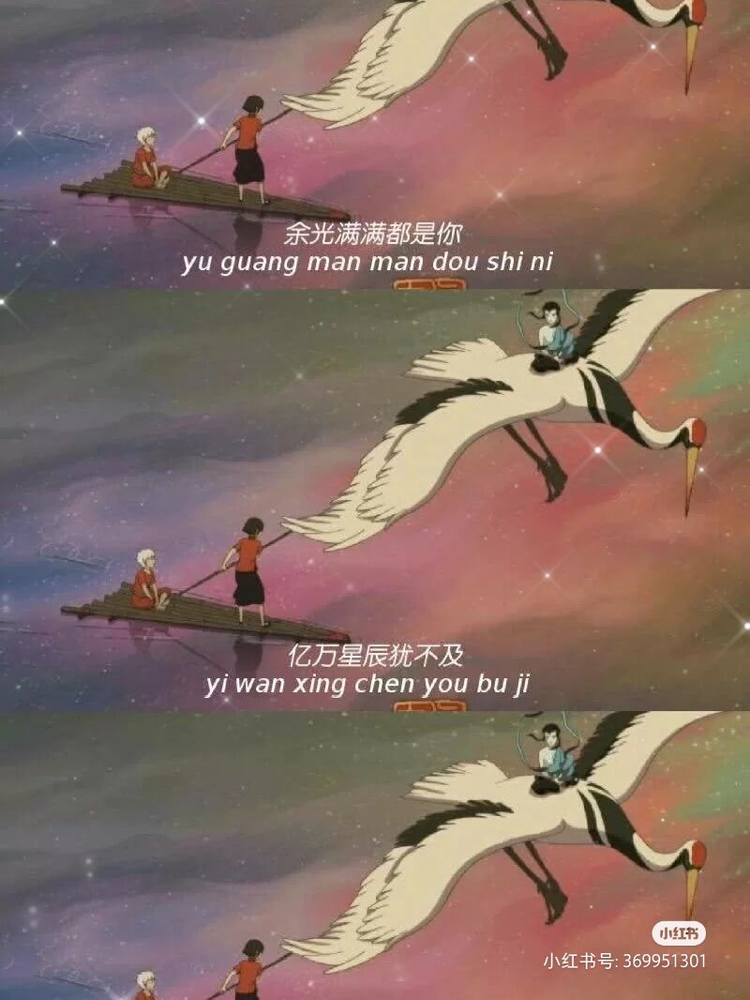
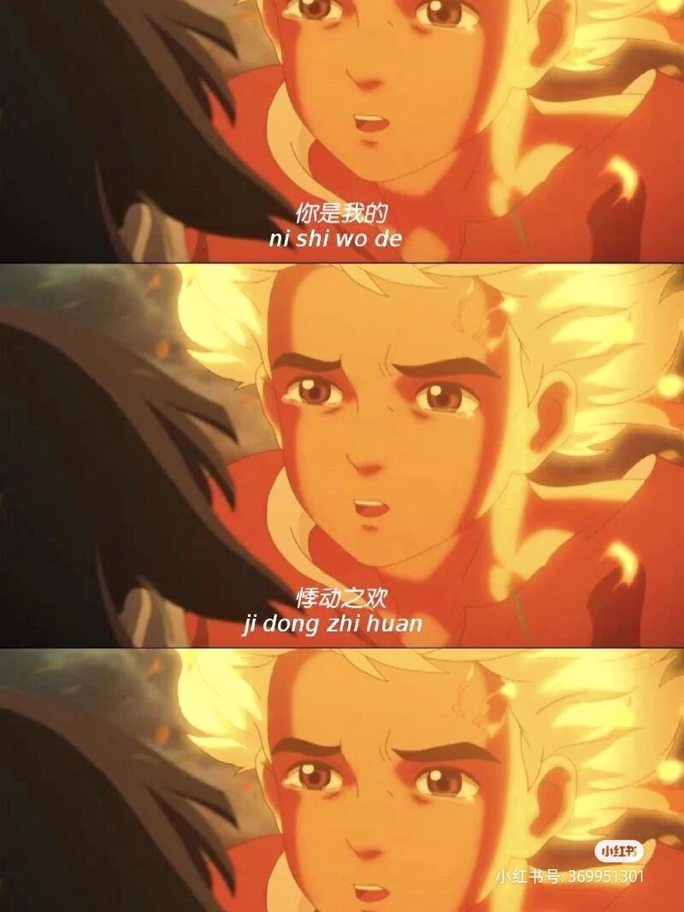
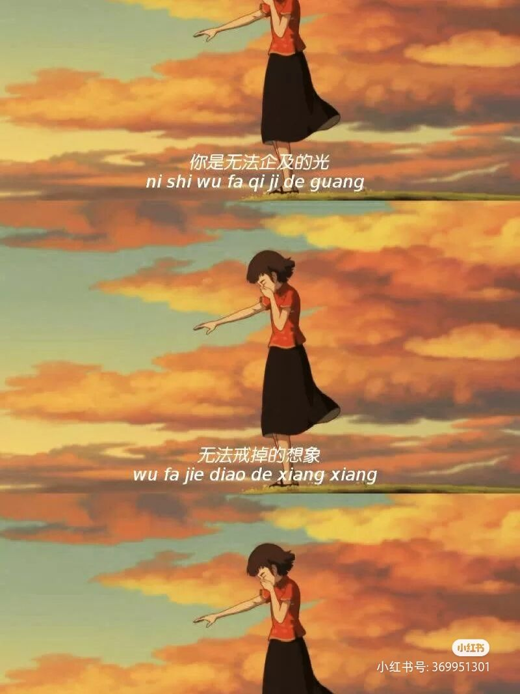

个人感受
返回
思想感悟
《大鱼海棠》本是樁花湫月，奈何北冥有鱼你是否已化作春雨，穿越时来到这里，樁去湫来，海栄花开，你在梦里，我不愿醒来。--
《在这个世界相遇》
人的生命来源于大海"所有活着的人类，都是海里一条巨大的鱼。我们的生命就像横越大海，没有人相信我，都说我老糊涂了，可是每一次在梦里，我都清楚地看到一群大鱼从天而降，听到他们呼唤的声音。那些美好的声音唤醒了我的回忆。"
愿世间所有心有羁绊的人，最后都能拨开纷扰，又一次重逢。
May al the people in the world with fetters in
their hearts finally be able to get rid of their troubles and meet again .
山前既相见，山后再重逢。
They wil meet at the front of the mountain and meet again at the back of the mountain .
人生，总会有不期而遇的温暖和生生不息的希望。愿，你我安好


